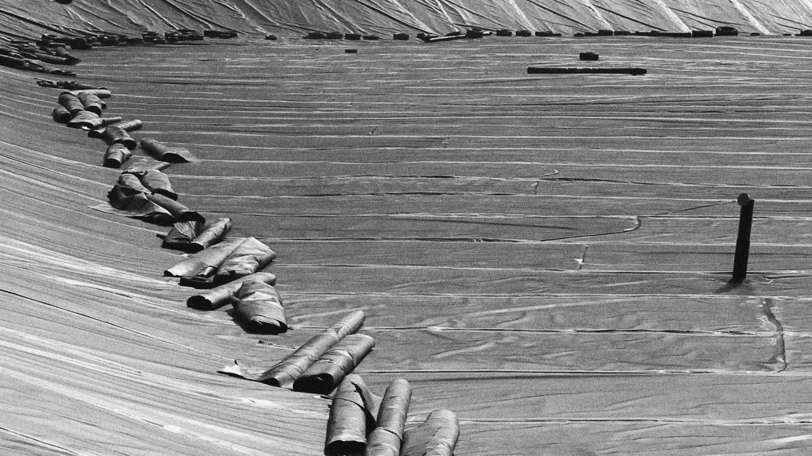
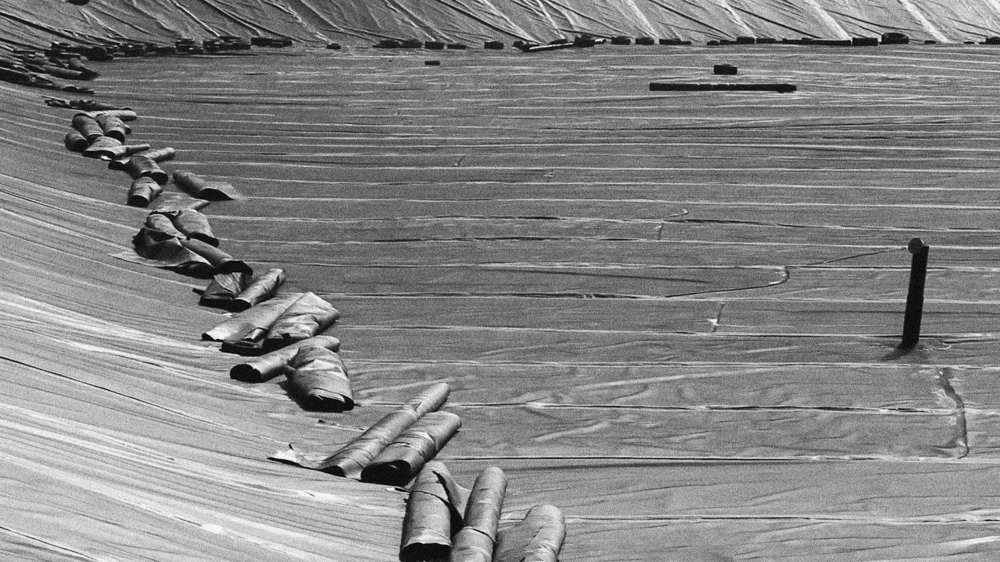
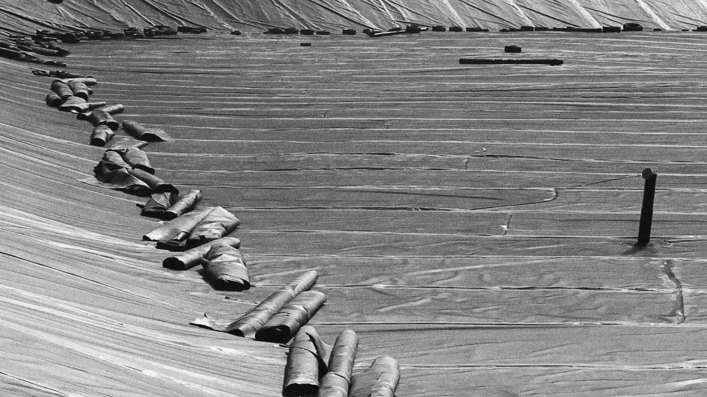

En el verano del 2014, una catástrofe química fue descubierta en las aguas del río Gállego.
En aquél momento, mientras terminaba mis años de universidad, co-fundé cun equipo de producción con algunos compañeros para explorar las raíces del problema, y convertirlas en un documental de largometraje.
El resultado final, un documental bruto y primerizo, pero directo y potente, fue seleccionado en Ecozine, el festival medioambiental más importante de nuestra capital.
